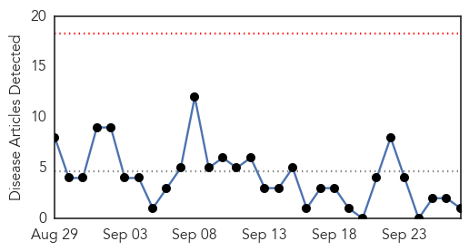
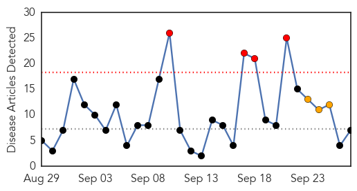
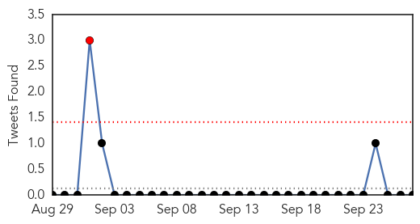

MERS
30-Day Web Trend
0 alerts, 0 warnings

30-Day Twitter Trend
0 alerts, 0 warnings

Article Locations

Article Confidences

Top Articles:
Top Tweets:
-
No tweets found for Sep 27, 2015
Influenza
30-Day Web Trend
4 alerts, 3 warnings

30-Day Twitter Trend
1 alerts, 0 warnings

Article Locations
Article Confidences
Top Articles:
- 0.997
- Flu shot recommended despite last year’s fizzle
- 0.997
- Governor and First Lady set example by getting flu vaccination — and encourage others to do the same
- 0.996
- West Kentucky Star
- 0.936
- PARIS-LAMAR COUNTY HEALTH DISTRICT ANNOUNCES 2ND ANNUAL DRIVE
- 0.751
- September 26, 2015 Archives
- 0.751
- September 26, 2015 Archives
- 0.712
- Cebu Lifestyle, The Freeman Sections, The Freeman
Top Tweets:
-
No tweets found for Sep 27, 2015